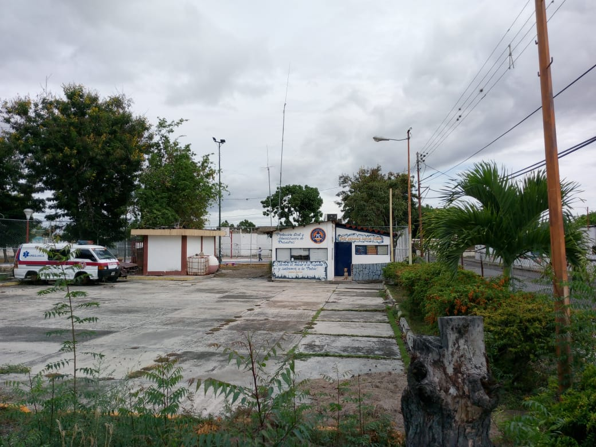

Protección Civil, se conocia anteriormente como Prevención a Desastres, en sus inicios estaba ubicado frente al Polideportivo Quibor. En el mismo se realizaban las actividades diarias de la Institución, pero debido al poco apoyo y espacio que se tenia, surgió la necesidad de solicitar un área dentro de las instalaciones del ambulatorio de La Ceiba Norte, allí mismo nos fue cedido un espacio; tiempo después nos instalamos a un lado del ambulatorio estableciendo así oficialmente el comando de Protección Civil del Municipio Jiménez en el año 2013, aunque para ese entonces no los conocían a profundidad y los asociaban con el Cuerpo de Bomberos.
Tiempo después el cuerpo de Protección Civil se consolido prestando sus servicios y atención a favor de las comunidades. Hoy en día realizan inspecciones de riesgo a las comunidades mediante solicitudes en físico, de igual forma realizan talleres de capacitación y formativos, análisis de necesidades, guardias preventivas, entre otros. El comando cuenta con 10 oficiales y 1 voluntario, su horario de guardia es de 24 x 48 en los cuales se encuentran 2 oficiales y 2 administrativos por cada guardia.